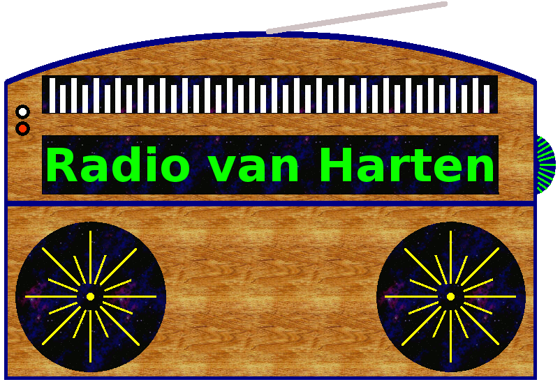

Vlaanderen
Antwerpen FM
BNL Radio
FG Xtra
Joe
Joe 60`s & 70`s
Joe 80`s & 90`s
Joe Easy
Joe Lage Landen
Joe Top 2000
Nostalgie Vlaanderen
NRJ Vlaanderen
Radio Centraal
Radio Maria
Radio Minerva
Radio Park FM
Radio Reflex
Radio Stad
Radio Totaal
Q-Foute Radio
Radio Zuidrand
Q-Maximum Hits
Qmusic
Stadsradio Vlaanderen
Tomorrowland
Top Radio
VRT Ketnet
VRT Klara
VRT Klara Continuo
VRT MNM
VRT MNM Hits
VRT MNM R&Beats
RT MNM Throwback
VRT Klara Continuo
VRT NWS
VRT Radio 1
VRT Radio 1 - Classics
VRT Radio 1 - De Lage Landen Lijst
VRT Radio 2 West-Vlaanderen
VRT Radio 2 Bene Bene
VRT Studio Brussel
VRT Studio Brussel-Bruut
VRT Studio Brussel-De Tijdloze
VRT Studio Brussel-Hooray
VRT Studio Brussel-vuurland
VRT Studio Brussel-UNTZ
Willy
Ost Belgien
Wallonie